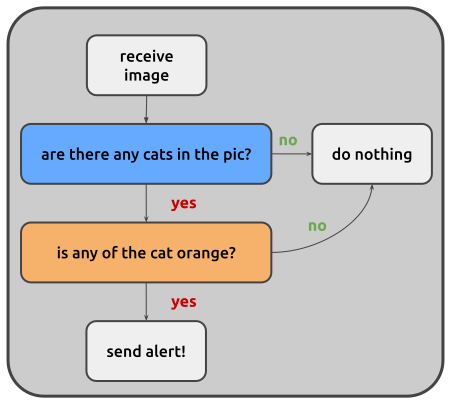

This guide contains the basic instructions you can follow to create custom nodes
to use within Juturna pipelines. Other than an overview of how to assemble all
the pieces to design useful custom components, this document will offer the
required steps to create a node called RedCatDetector, a processing node in
charge of using a custom YOLO model to detect the possible presence of red cats
in any input image.
Make sure you are working on a virtual environment, and you have Juturna installed alongside all the extra dependencies you need for your node.
user:~/prj$ python3 -m venv .venv
user:~/prj$ source .venv/bin/activate
(.venv) user:~/prj$ pip install juturna
(.venv) user:~/prj$ mkdir plugins
With the last command, we created the plugins folder where we are going to
store our custom node.
Every node has the same base content structure. A node called <NODE_NAME> of
type <NODE_TYPE> will be stored as:
./plugins
└── nodes
└── <NODE_TYPE>
└── _<NODE_NAME>
├── <NODE_NAME>.py
├── config.toml
├── requirements.txt
└── readme.md
Since RedCatDetector is a proc node, we can go ahead and create all the
required files under ./plugins/nodes/proc/_red_cat_detector/. Alternatively,
we can let Juturna handle that for us with the CLI stub command:
(.venv) user:~/prj$ python -m juturna stub \
-n red_cat_detector \
-t proc \
-d ./plugins/nodes \
-a "Cat Watcher" \
-e watch@cat.com
This will generate a node skeleton.
"""
CatDetector
@author: Cat Watcher
@email: watch@cat.com
@created_at: 2025-11-10 12:56
Automatically generated with jt.utils.node_utils.node_stub
"""
import typing
from juturna.components import Node
from juturna.components import Message
# BasePayload type is intended to be a placehoder for the input-output types
# you intend to use in the node implementation
from juturna.payloads._payloads import BasePayload
class RedCatDetector(Node[BasePayload, BasePayload]):
"""Node implementation class"""
def __init__(self, **kwargs):
"""
Parameters
----------
kwargs : dict
Supernode arguments.
"""
super().__init__(**kwargs)
def configure(self):
"""Configure the node"""
...
def warmup(self):
"""Warmup the node"""
...
def set_on_config(self, prop: str, value: typing.Any):
"""Hot-swap node properties"""
...
def start(self):
"""Start the node"""
# after custom start code, invoke base node start
super().start()
def stop(self):
"""Stop the node"""
# after custom stop code, invoke base node stop
super().stop()
def destroy(self):
"""Destroy the node"""
...
def update(self, message: Message[BasePayload]):
"""Receive data from upstream, transmit data downstream"""
...
# uncomment next_batch to design custom synchronisation policy
# def next_batch(sources: dict) -> dict:
# ...
[arguments]
[meta]
# cat_detector
## Node type: proc
## Node class name: CatDetector
## Node name: cat_detector
// this file is empty
If you decide to create your node files manually:
make sure the node folder name starts with an underscore (_) (in our
example, the node code is in the folder
./plugins/nodes/proc/_red_cat_detector)
make sure the node class file has the same name of its parent folder, just
without the underscore (in our example, the node class file is
./plugins/nodes/proc/_red_cat_detector/red_cat_detector.py)
keep in mind that a README.md file is not required, but higly
recommended!
We know our node will use a custom YOLO model
to detect the presence of cats, so when executing the pipeline we need to
make sure all the YOLO dependencies are satisfied. We then install the
ultralytics package, and include it in the requirement file. We also install
opencv-python to get a better support when checking alarmingly high levels
of orangeness in our detected entities.
(.venv) user:~/prj$ echo "ultralytics==8.3.79\n" >> plugins/nodes/proc/_red_cat_detector/requirements.txt
(.venv) user:~/prj$ echo "opencv-python==4.13.0.92" >> plugins/nodes/proc/_red_cat_detector/requirements.txt
(.venv) user:~/prj$ pip install -r plugins/nodes/proc/_red_cat_detector/requirements.txt
Dependencies are not automatically managed (1.0.1-beta)
Juturna does not manage Python dependencies automatically, so always remember to gather the dependencies of any plugin nodes you want to use, and install them. This process may also lead to conflicts; if that happens, you can try to solve them manually, or in the worst case, edit the conflicting nodes or create new ones!
For our cat detector, we want to specify a few arguments that will be available
for the node implementation. In juturna, this is done by declaring all the
essential arguments the node accepts, alongside their default values, in the
config.toml file. In our case, this is
./plugins/nodes/proc/_red_cat_detector/config.toml.
We can imagine the node needs to know:
the inference model to use,
the device to run inference on (whether on CPU or GPU),
inference arguments such as confidence threshold and precision.
We pack all this in the node configuration file, where we can define the node arguments and their corresponding default values.
[arguments]
model = "yolo11x.pt"
device = "cuda"
cat_min_confidence = 0.4
orangeness_threshold = 0.6
The items specified in the node config file are also available to the node
__init__ method. We start implementing the node class:
we import the node dependencies (in this case, ultralytics, cv2 and
numpy),
we modify the constructor signature to include the node arguments,
we change the input and output types for the node (we receive images to segment as input, and we produce annotated images as output)
import ultralytics
import cv2
import numpy as np
from juturna.payloads import ImagePayload
class RedCatDetector(Node[ImagePayload, ImagePayload]):
def __init__(self,
model: str,
device: str,
cat_min_confidence: float,
orangeness_threshold: float,
**kwargs):
# this automatically instantiates the base node
super().__init__(**kwargs)
self.model_name = model
self.device = device
self.cat_min_confidence = cat_min_confidence
self.orangeness_threshold = orangeness_threshold
self.model = None
self._target_class = list()
Our node doesn’t need much else. It only instantiates a YOLO model, and that can
be done in the warmup method. Similarly, we isolate the key corresponding to
the class cat among all the possible targets of the YOLO model (we are
only interested in detecting cats), and store that in a list so that we can
later pass it to the model directly.
def warmup(self):
self.model = YOLO(self.model_name)
self.model.to(self.device)
self._target_class = [k for k, v in model.names.items() if v == 'cat']
# we can use the built-in logger
self.logger.info('model instantiated and ready')
The processing logic of the node is pretty simple, and can be fully contained in
the update method. What we want to do is:
receive an image and run it through our model;
check the YOLO results for the presence of cats;
isolate orange cats among all other cats;
transmit an alert whenever one of those little devils is found.

The update code might then look something like this:
def update(self, message: Message[ImagePayload]):
# the image to segment is contained in the payload of the received
# message
results = self.model.predict(
message.payload.image,
verbose=False,
conf=self.cat_min_confidence,
classes=self._target_class,
)
# no cat was found, we can return
if len(results[0].boxes) == 0:
return
orange_cats = list()
# check all the crops for orangeness, we only want orange cats!
for idx, box in enumerate(results[0].boxes):
bx = box.xyxy[0]
x1, y1, x2, y2 = map(int, bx)
crop = image_rgb[y1:y2, x1:x2]
if self._is_cat_orange(crop)[0]:
orange_cats.append(idx)
# cats were found, but none of them were orange enough
if len(orange_cats) == 0:
return
# we drop all the other boxes and only keep the ones containing orange
# cats
results[0].boxes = results[0].boxes[orange_cats]
annotated = results[0].plot()
to_send = Message[ImagePayload](
creator=self.name,
version=message.version,
payload=ImagePayload(
image=annotated,
width=annotated.shape[1],
height=annotated.shape[0],
depth=annotated.shape[2],
pixel_format=message.payload.pixel_format,
timestamp=message.payload.timestamp,
),
timers_from=message,
)
to_send.meta['annotations'] = results[0]
self.transmit(to_send)
The utility function _is_cat_orange simply uses the HSV version of the
cropped region to check the level of orangeness. This might fail under some
specific circumstances (maybe you, just like me, have an orange wall), but for
now we’ll make do.
def is_orange_cat(self, crop_rgb):
if crop_rgb.dtype != np.uint8:
crop_rgb = (crop_rgb * 255).astype(np.uint8)
hsv = cv2.cvtColor(crop_rgb, cv2.COLOR_RGB2HSV)
lower_orange = np.array([5, 50, 50])
upper_orange = np.array([25, 255, 255])
mask = cv2.inRange(hsv, lower_orange, upper_orange)
orange_pixel_count = np.count_nonzero(mask)
total_pixels = mask.size
orange_fraction = orange_pixel_count / total_pixels
return orange_fraction > self.orangeness_threshold, orange_fraction
Once this is done, we are all set to start using our custom node. Assuming we
have a YOLO model readily available, we can place it in a models folder in
our project, then fill in the node configuration in a pipeline JSON file.
(.venv) user:~/prj$ mkdir models
(.venv) user:~/prj$ cp path/to/model/yolo11x.pt ./models
In the pipeline configuration file, the node will be represented by the following:
{
"name": "detector",
"type": "proc",
"mark": "red_cat_detector",
"configuration": {
"model": "./models/yolo11x.pt",
"device": "cuda",
"cat_min_confidence": 0.5,
"orangeness_threshold": 0.6
}
}
There might be cases where we need to tweak the node while the pipeline is
running. For the red cat detector, this could mean changing the model used for
inference, or making the inference itself stricter or looser. To do so, we can
implement the set_on_config method. In here, we can specify what to do when
a new value for a particular property needs to be set on the node.
def set_on_config(self, prop: str, value: typing.Any):
if prop == 'cat_min_confidence':
self.cat_min_confidence = value
elif prop == 'orangeness_threshold':
self.orangeness_threshold = value
elif prop == 'model':
self.model_name = value
self.model = YOLO(self.model_name)
self.model.to(self.device)
else:
self.logger.info(f'cannot update node with property {prop}')